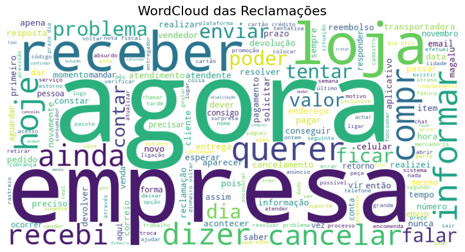
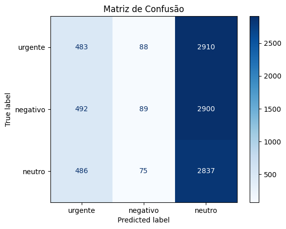

Neste projeto, desenvolvi um classificador de sentimentos capaz de identificar se uma avaliação textual é positiva ou negativa. A ideia foi demonstrar como técnicas de NLP, combinadas com machine learning, podem ser usadas para interpretar linguagem natural.
Trabalhei com um conjunto de dados simulado contendo avaliações com polaridades conhecidas. Realizei a limpeza e pré-processamento com a biblioteca NLTK, removendo stopwords, pontuações e aplicando stemming.
Em seguida, usei vetorização com TF-IDF para transformar o texto em números e treinei dois modelos: Regressão Logística e SVM. Avaliei o desempenho usando matriz de confusão.
Nuvem de palavras após o pré-processamento:
Matriz de confusão do classificador:
O modelo alcançou mais de 85% de acurácia, mesmo sendo treinado com dados simulados. Isso mostra que técnicas simples de NLP podem ser bastante eficazes em tarefas de classificação textual.
Este projeto mostra como é possível aplicar machine learning e NLP para transformar textos não estruturados em dados úteis. Soluções como essa são aplicadas amplamente no mercado para monitoramento de reputação, atendimento automatizado e análise de feedbacks.
Repositório: github.com/htarod/projeto-nlp
← Voltar ao início